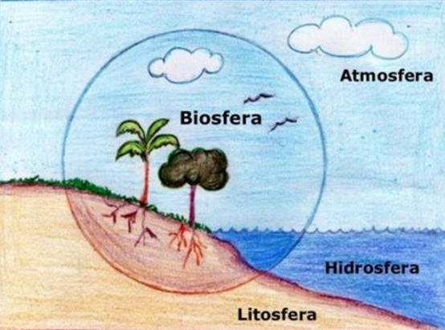
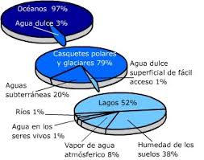
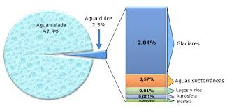

Hace 4600 m.a. la Tierra se forma por acreción de planetesimales formando una masa de roca incandescente. Los procesos volcánicos liberaban ingentes cantidades de gases que formaron la atmósfera, entre ellos vapor de agua. Cuando el planeta se fue enfriando, se produjo la condensación y precipitación del agua que pudo irse acumulando en las zonas más bajas de la superficie terrestre disolviendo numerosas sustancias de las rocas, entre ellas sales, dando lugar a los mares y océanos.
Recordemos que el origen de la geosfera, atmósfera, hidrosfera e hidrosfera están íntimamente ligados. Los gases de efecto invernadero de la atmósfera permitieron mantener temperaturas terrestres que permitían la presencia de agua en estado líquido. La cantidad de agua terrestre no ha variado desde la formación de la hidrosfera hasta ahora.
Pequeños nuevos aportes se producen desde el manto por fenómenos volcánicos, hidrotermales o en las dorsales oceánicas. Parte de esa agua vuelve al manto en las zonas de subducción de las placas litosféricas, por lo que el balance global hace que la hidrosfera mantenga un volumen más o menos constante. Salvo por los cambios geográficos debidos a la dinámica continental, la hidrosfera ha cambiado poco en su conjunto, salvo por la variación de los niveles de algunos compuestos disueltos como el CO2.
 